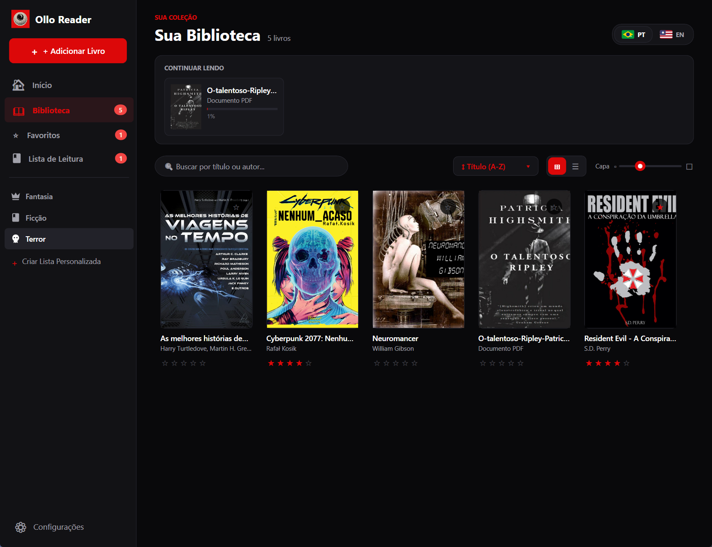
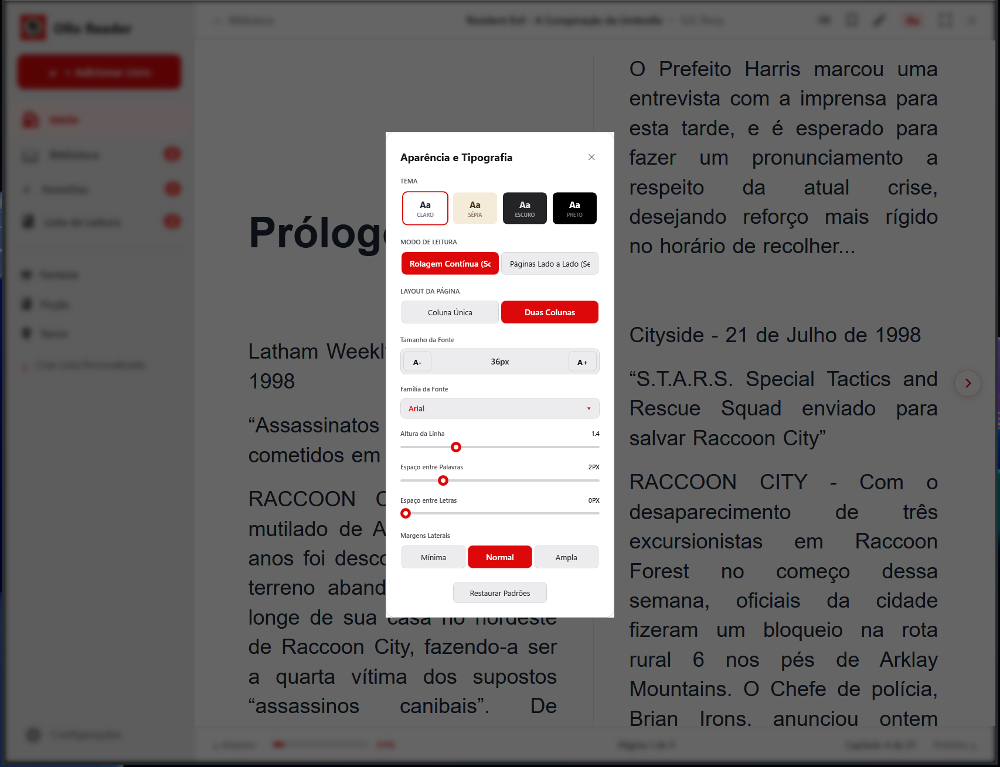
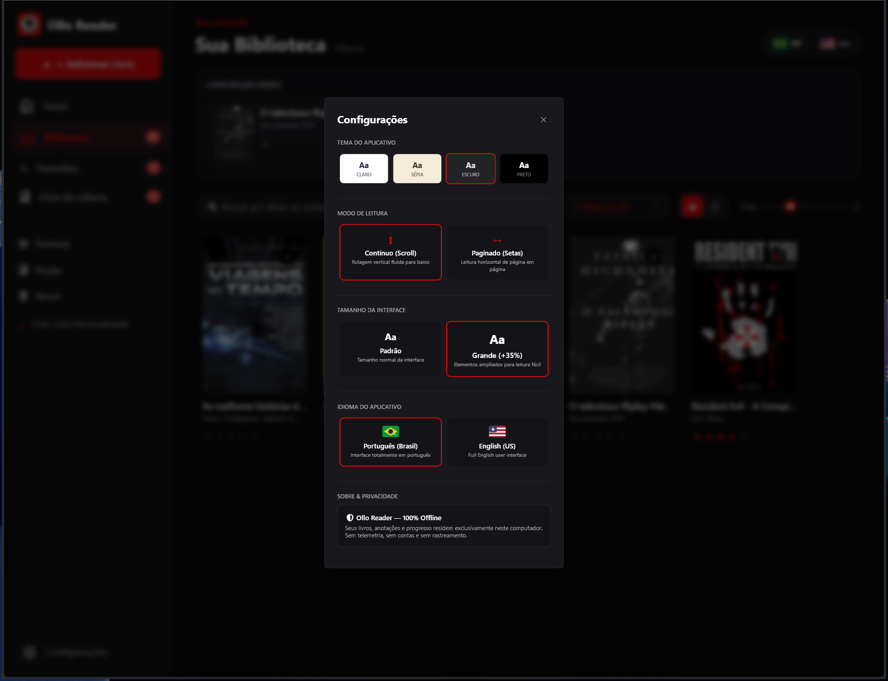

O leitor nativo de EPUB e PDF projetado para quem ama ler no computador. Organize milhares de livros, personalize cada detalhe da tipografia e leia com total privacidade.

Organize seus livros com carrossel de "Continuar Lendo", progresso em tempo real, busca instantânea e pastas sincronizadas.
Offline e Local no seu PC
Motor duplo de alta performance
Claro, Sépia, Escuro e Preto OLED
Sem telemetria ou coleta de dados
Inspirado nos melhores leitores modernos e construído nativamente para Windows com foco em velocidade, organização e conforto visual.
Visualize seus eBooks em Grade ou Lista detalhada. Sincronize pastas e subpastas locais automaticamente sem duplicar arquivos.
Transforme qualquer EPUB para o seu estilo ideal de leitura. Controle absoluto sobre cada aspecto do texto na página.
Alterne entre leitura paginada (como um livro físico) ou rolagem contínua vertical. Suporte completo a PDFs técnicos e ilustrados.
Marque trechos importantes com cores personalizadas, adicione anotações e gerencie seu progresso de leitura manualmente ou automaticamente.
Mantenha sua estante impecável. Edite títulos, autores, gêneros, avaliações por estrelas (1 a 5) e substitua capas diretamente no app.
Proteja sua visão em qualquer ambiente com temas cuidadosamente calibrados e escala de interface ajustável para monitores 4K ou ultrawide.
Muitos arquivos EPUB vêm com formatações ruins ou fontes difíceis de ler. No Ollo Reader, o painel de Aparência e Tipografia aplica suas preferências instantaneamente sobre qualquer livro.

Chega de procurar arquivos perdidos em dezenas de pastas no Windows Explorer. Conecte suas pastas locais ao Ollo Reader e deixe que ele organize tudo automaticamente.
Seja em um notebook compacto ou em um monitor 4K, o Ollo Reader permite escalar toda a interface em até +35% e alternar entre 4 temas globais.

Baixe oficialmente pela Microsoft Store com instalação segura MSIX e atualizações automáticas.
Experimente a velocidade e todos os recursos do Ollo Reader no seu Windows por 7 dias.
Desbloqueie o aplicativo para sempre com pagamento único, sem mensalidades.
Tire suas dúvidas sobre formatos suportados, privacidade e funcionamento do Ollo Reader.
.bat aberto por transparência total: você pode clicar nele com o botão direito → Editar no Bloco de Notas e ver exatamente as poucas linhas que ele executa (ele apenas copia os arquivos da pasta App para a sua pasta de programas do usuário %LOCALAPPDATA%\Programs\OlloReader e cria o atalho na sua Área de Trabalho, sem pedir senha de Administrador e sem tocar no sistema).App que está dentro do .ZIP e dar dois cliques direto no executável OlloReader.exe — o programa funciona imediatamente em modo portátil! (Nota: caso o Windows Defender SmartScreen exiba um aviso azul de aplicativo novo na primeira vez, basta clicar em 'Mais informações' → 'Executar assim mesmo').
Baixe o Ollo Reader agora na Microsoft Store e redescubra o prazer de ler seus livros digitais sem distrações.